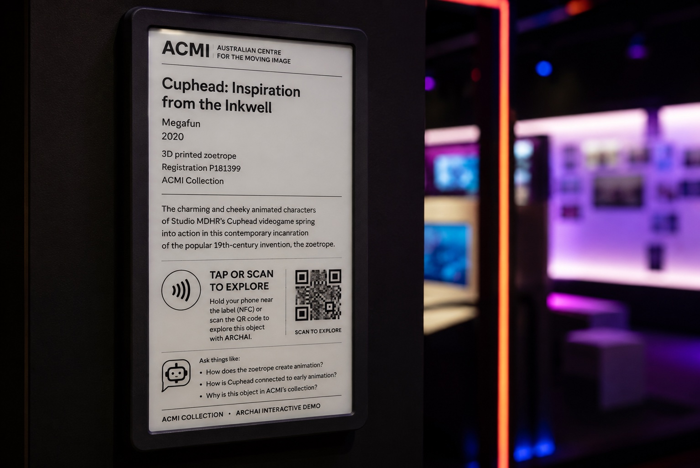

Research concepts for a sovereign, local-first AI collaboration. Each is Research-through-Design: the working prototype, tested in a real gallery, is the research, and how we would research, explore and share the data is set out for each.
Built and improved with Huggle (a transparent multi-agent development log) and secured with Keytec (a sovereign secrets & API-key wallet), so implementation never loosens sovereignty.
How does conversational + semantic search change how curators find connections and build exhibitions?
At ACMI This is the staff-facing twin of the Constellation. ACMI already models the collection as a web of relationships (the lens-driven Constellation, the object-wall adjacencies) for visitors, but curators building exhibitions still discover connections through the CMS, the open collection API, and spreadsheets, largely by keyword and prior knowledge.
What access gains come from conversational, multilingual, voice-first collection interpretation?
At ACMI This lands squarely in ACMI's free permanent exhibition, The Story of the Moving Image, where interpretation today is overwhelmingly text-and-screen based, wall labels, object-wall captions, and the Lens's collected-content pages, which structurally excludes low-literacy visitors, blind/low-vision visitors, older visitors, and Naarm/Melbourne's large non-English-first communities (Mandarin, Cantonese, Vietnamese, Arabic, Greek, Italian). ARCHAI adds a conversational, multilingual, voice-first interpretation layer over a defined cluster of ~15-20 works/objects: a visitor speaks or taps in any of a chosen ~8 languages, asks "what am I looking at / why does it matter," and hears a spoken, plain-language answer grounded ONLY in ACMI's own catalogue records and curatorial interpretation.
Which local models sustain grounded, hallucination-free, fast interpretation on museum-owned hardware?
At ACMI This is a back-of-house technical experiment, not a visitor demo, its output is the sovereign appliance every later ARCHAI-at-ACMI activity would run on, so it belongs where ACMI already handles technical, controlled, collection-adjacent work: the Blackmagic-supported Media Preservation Lab, run against ACMI's own open collection API. The API is the reason ACMI is the ideal site for this specific question: it exposes clean, structured, field-level records (title, creator, date, credit line, description, Constellation lenses/tags) that give you machine-checkable ground truth, you can score a model's every claim against the actual record field, which you cannot do at Heide (no open API, curated record set only).
Can low-power e-paper + NFC turn a static label into living, updatable, conversational interpretation?

Concept mockup, an ARCHAI e-paper label: it redraws from the record, and a tap (NFC) or scan opens a conversation with the object.
At ACMI Anchor on the Gallery 1 object wall in "The Story of the Moving Image", hundreds of floor-to-ceiling screen-technology objects (cameras, projectors, consoles, phones) whose interpretation is currently thinnest-per-object and locked to a print/production cycle. This is the exact place a "living label" earns its keep.
What becomes possible when all open-licensed collections are federated into one local sovereign stack?
At ACMI This experiment has an unusually exact home at ACMI because ACMI already ships the two things ARCHAI needs and nobody else in the sector has: (1) a genuinely open collection API and CC-licensed metadata on GitHub (maintained by the collection-API developer), and (2) the Constellation, ACMI's own curatorial model of the moving image as a web of connections between works, creators and technologies inside The Story of the Moving Image. The federated sovereign index IS the Constellation computed at sector scale: today the Constellation is hand-authored and single-institution; ARCHAI turns it into a living, multimodal, cross-collection graph by federating ACMI's open records with the other open GLAM screen collections Rob already indexes (Trove/NFSA screen records, Europeana AV, Wikimedia Commons) into one local Qdrant stack.
Can moderated visitor contributions become verified archival metadata without eroding authority?
At ACMI Anchor it to the Object Wall in the free permanent exhibition "The Story of the Moving Image." The Wall's screen-technology objects (magic lanterns, home-cine and VHS gear, consoles, cameras) are exactly the records with thin, contested or Melbourne-specific provenance, the class of object where a visitor genuinely holds knowledge the institution lacks ("we sold these at Myer," "my father serviced this model," community memory around the videogames and Australian-screen-history holdings). That mismatch is the whole reason to test community provenance here rather than on well-documented film/TV records.
How can cultural protocols be enforceable properties of the system, not just policy?
At ACMI The fit is a real, documented gap. ACMI already has the *policy* layer, the First Nations Cultural and Intellectual Property (ICIP) Protocol and the Reconciliation Action Plan, and publicly commits that "First Nations communities have first right of access" to First Nations cultural materials.